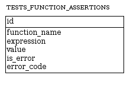

Common concept
To run tests, two things are needed. First, some place where tests data - such as testing expressions, their expected results e t.c. - is stored. Second thing is API, which will use that data and produce all checks which that data describes. This page contains explanation for both those things - how testing storage is organized and what API is provided by mysql-unit to produce test checks.
First thing to say about testing storage: it is stored in database. That means, during installation, all needed tables will be created, and in order to run tests, those tables should be used. So, you will have to know the structure of testing storage if you want to add tests there manually. (Currently, manual tests storage managing is the only way, but in future, the corresponding API will be added)
Next, all testing API in front is a call of MySQL procedure. That means - you'll use CALL to invoke them. Also, testing procedures will run till first failure. So, if failure happened, testing procedure will stop and display some information about - what had failed and why.
Testing storage structure
Storage for tests contains two parts: for functions testing and for procedure testing. There are differences in them, because procedures testing is much more complicated: inside procedures we can do DDL changes, other procedures calls, e.t.c. - thus, procedure testing part should handle all those things.
All storage tables are in upper case and starts with TEST_ prefix. Be careful - depending from OS your server may be sensitive or not to table names case. Since installation process contains DROP TABLE IF EXISTS statement, you should be aware about case-sensitivity, if your installation database already contains tables with such names, but in different case.
Functions testing storage
Storage for functions testing is represented by one single table. It's named TEST_FUNCTION_ASSERTIONS. Below is it's common structure:

Description for each field is:
id
Primary key. This identifier will be included into failure result, if the corresponding test derived that failurefunction_name
Name of function, which should be tested of this test. Note, that it has nothing common withexpressionfield. This field is sort of group identifier. When testing procedure is invoked, the name of tested function will passed to it, and this field will be checked if it matches that tested function name.expression
The expression, that will be evaluated when test will be run. It may contain any valid SQL expression or even subqueries (if they return one row). However, if upper level is aSELECTstatement, then whole expression should be enclosed in parenthesis.value
The value, which should be a result of theexpressionevaluation. If test supposed to be non-error, then equality of that result and this field means that test passed.is_error
Flag, which indicates if this test should throw SQL error. If this flag is set, then test will pass if it throws error with code, which iserror_code. If test didn't throw error or thrown error with another code, then test will fail.error_code
Applicable ifis_errorflag is set. Specified expected error code for this test. Ifis_erroris not set, then this field will be ignored.
Procedures testing storage
Storage for procedures testing is more complicated and consists of several tables. The model of testing is now not just iterate through all matched rows, but also to check multiple expressions for each test. Arguments list is also separated - that is because procedure call is not just a usual expression. Tables for this storage part:
TEST_PROCEDURE_ASSERTIONS
Main table, which contains procedures tests. It is a parent table and contains only generic procedure-specific fields.TEST_PROCEDURE_ARGUMENTS
Table, which holds arguments for each test.TEST_PROCEDURE_RESULTS
Results of procedure call. One procedure may do many things, so that is why for testing it many expressions are also needed.
Below is a diagram that illustrates relations between those tables:
As it was done for functions part, here is a description for each field of each table:
-
TEST_PROCEDURE_ASSERTIONS
id
Primary key. This identifier will be included into failure result, if the corresponding test derived that failure. Note, that there is a difference with function testing. This identifier will be included into failure result only if the failure was caused by procedure call itself and not by test check, which was made in order to make sure that test passed. The model is: run procedure, then, if call was successful, run tests to check if procedure results match expectations.
procedure_name
Name of procedure, which should be tested. This is a group identifier for group of tests for that procedure.is_error
Flag, which indicates if this procedure call should throw SQL error. If this flag is set, then test will pass if it throws error with code, which iserror_code. If test didn't throw error or thrown error with another code, then test will fail.error_code
Applicable ifis_errorflag is set. Specified expected error code for this test. Ifis_erroris not set, then this field will be ignored.
-
TEST_PROCEDURE_ARGUMENTS
id
Primary key of the table. Will not appear anywhere if all is well.test_id
Identifier of the corresponding test fromTEST_PROCEDURE_ASSERTIONSargument_value
A value of argument that will be passed, when invoking a procedure for correspondingtest_id. String values must be placed with quotes, otherwise they will be treated as SQL tokens.argument_type
Currently, all types are just strings (VARCHAR in terms of MySQL) and this field is unused.
-
TEST_PROCEDURE_RESULTS
id
Primary key of the table. If procedure call was successful, but theref_expressioncheck failed after that, then this identifier will override identifier from parent table in failure result.test_id
Identifier of the corresponding test fromTEST_PROCEDURE_ASSERTIONSref_expression
The expression, that will be evaluated when test will be run. It may contain any valid SQL expression or even subqueries (if they return one row). However, if upper level is aSELECTstatement, then whole expression should be enclosed in parenthesis.ref_value
The value, which should be a result of theref_expressionevaluation. If test supposed to be non-error, then equality of that result and this field means that test passed.ref_is_error
Flag, which indicates if this check should throw SQL error. If this flag is set, then test will pass if it throws error with code, which isref_error_code. If test didn't throw error or thrown error with another code, then test will fail.ref_error_code
Applicable ifis_errorflag is set. Specified expected error code for this test. Ifref_is_erroris not set, then this field will be ignored.
Testing API
As it was already said, testing API is always a procedure call. Procedure call result is SQL error code with some message or successful execution result. Also, if some test failed, it is possible to include failure description as a row set into result. This is useful, because external driver may capture both error and result set by single call.
Front API
There are basic wrappers for testing procedures, which are provided by framework. They are:
TEST_FUNCTION
Has one parameter, tested function name. Do all tests for specified function by name and show error result if there was a fail or success result if all tests passed.TEST_FUNCTION_VERBOSE
Has one parameter, tested function name. Do all tests for specified function by name and show error result together with error trace row set if there was a fail or success result if all tests passed.TEST_PROCEDURE
Has one parameter, tested procedure name. Do all tests for specified procedure by name and show error result if there was a fail or success result if all tests passed.TEST_PROCEDURE_VERBOSE
Has one parameter, tested procedure name. Do all tests for specified procedure by name and show error result together with error trace row set if there was a fail or success result if all tests passed.
So, all front-API procedures have only one parameter, tested entity name. They are called "front-API" because they are just wrappers for main testing procedures. This procedures are easy to use, and, normally, they are enough to produce all desired testing results.
General API
However, under the hood of front-API procedures, there are two generic testing procedures, which will do all the work. They may be used to do custom test run (by test identifier), and, of course, as a replacement for front-API:
-
TEST_FUNCTION_BY_ASSERT
Has three parameters:- Function name. The name of function that has to be tested
- Flag for verbose output. If set, then, in case of failure, procedure will also return row set with trace of test failure.
- Test id. Identifier for test. If is not an empty string, then only test by specific identifier will be run.
-
TEST_PROCEDURE_BY_ASSERT
Has three parameters:- Procedure name. The name of procedure that has to be tested
- Flag for verbose output. If set, then, in case of failure, procedure will also return row set with trace of test failure.
- Test id. Identifier for test. If is not an empty string, then only test by specific identifier will be run.